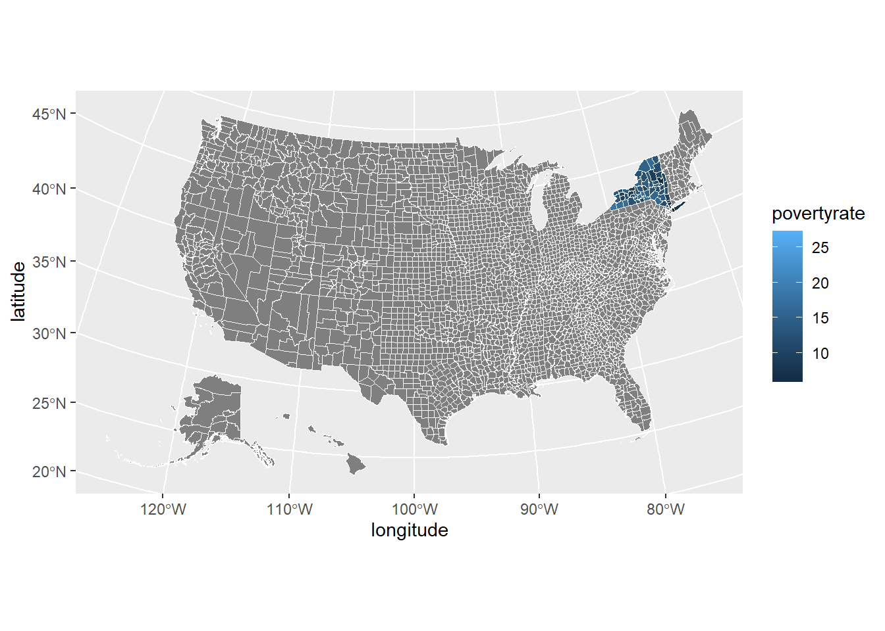
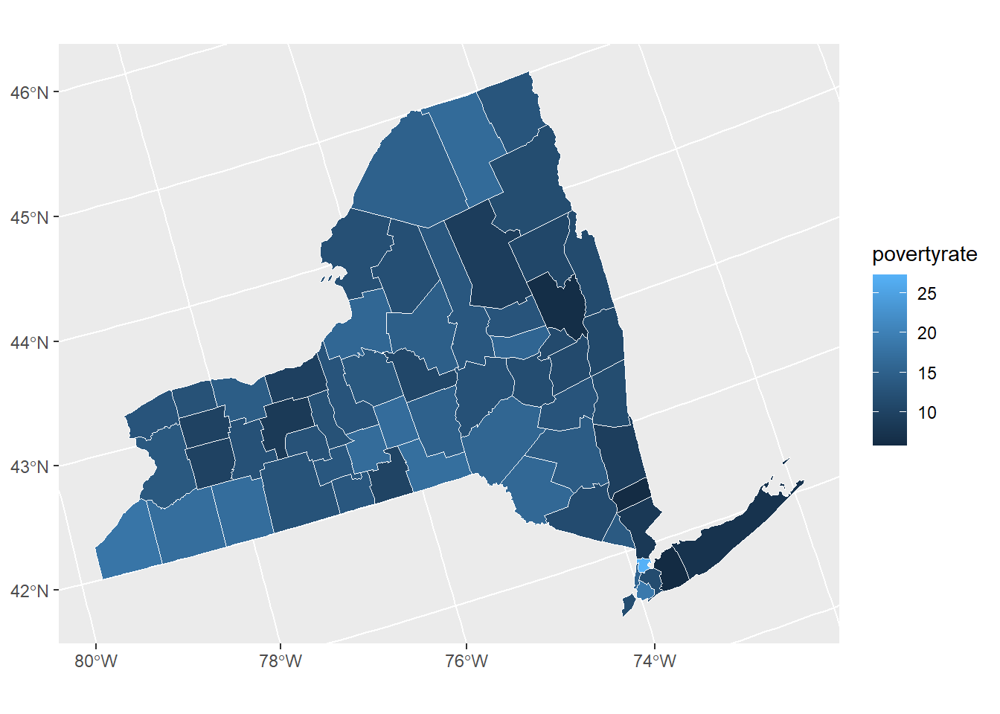

Income=read.csv("data\\Income.csv")
Income<-Income %>%
rename(
county_fips = State...County.Name,
county_id=County.ID,
povertyrate=All.Ages.in.Poverty.Percent
)a =Res$cuisinesvege <- str_detect(a,"Vegetarian")
ResV <- cbind(vege,Res)#class(ResV$vege)
ResV$vege <- as.numeric(ResV$vege)ResVV <- subset(ResV,vege==1) ResVVV <- ResVV %>%
dplyr::select(id,city,name,latitude, longitude,phones,paymentTypes,postalCode) %>%
mutate(latitude=as.numeric(latitude), longitude=as.numeric(longitude)) %>%
na.omit() library(sp)
library(maps)
library(maptools)
# The single argument to this function, pointsDF, is a data.frame in which:
# - column 1 contains the longitude in degrees (negative in the US)
# - column 2 contains the latitude in degrees
latlong2county <- function(pointsDF) {
# Prepare SpatialPolygons object with one SpatialPolygon
# per county
counties <- map('county', fill=TRUE, col="transparent", plot=FALSE)
IDs <- sapply(strsplit(counties$names, ":"), function(x) x[1])
counties_sp <- map2SpatialPolygons(counties, IDs=IDs,
proj4string=CRS("+proj=longlat +datum=WGS84"))
# Convert pointsDF to a SpatialPoints object
pointsSP <- SpatialPoints(pointsDF,
proj4string=CRS("+proj=longlat +datum=WGS84"))
# Use 'over' to get _indices_ of the Polygons object containing each point
indices <- over(pointsSP, counties_sp)
# Return the county names of the Polygons object containing each point
countyNames <- sapply(counties_sp@polygons, function(x) x@ID)
countyNames[indices]
}
# Test the function using points in Wisconsin and Oregon.
# testPoints <- data.frame(x = ResVVV$longitude, y = ResVVV$latitude)
testPoints <- data.frame(x = ResVVV$longitude, y = ResVVV$latitude)
county_list<- latlong2county(testPoints)county_list_data<-as.data.frame(county_list)
VRes<-cbind(ResVVV,county_list_data)VRes<-VRes %>%
na.omit
#unique(VRes$county_list)county_name <- as.character(VRes$county_list)
# Remove all before and up to ",":
county_name2 <- gsub(".*,","",county_name)
data <- cbind(county_name2,VRes)
data$county_list <- NULL#unique(data$county_name2)Income=read.csv("data//Income.csv")
Income<-Income %>%
rename(
county_fips = State...County.Name,
county_id=County.ID,
povertyrate=All.Ages.in.Poverty.Percent
)
Income$county_id=as.character(Income$county_id)counties_sf <- get_urbn_map("counties", sf = TRUE)
spatial_data <- left_join(counties_sf,
Income,
by=c("county_fips"="county_id"))
ggplot() +
geom_sf(spatial_data,
mapping = aes(fill = povertyrate),
color = "#ffffff", size = 0.25) +
labs(fill = "povertyrate")+
geom_point(data=data,
aes(x=longitude,y=latitude))
How is the distribution of vegetarian restaurants in New York State? Does poverty rate relate to that distribution? To dive into those questions, we combine two datasets (one contains NY restaurants from datafiniti and another comes from U.S.Income & Poverty rate dataset) together for visualization.
counties_sf <- get_urbn_map("counties", sf = TRUE)
counties_sf<-counties_sf %>%
filter(state_name == "New York")
spatial_data <- left_join(counties_sf,
Income,
by=c("county_fips"="county_id"))
ggplot() +
geom_sf(spatial_data,
mapping = aes(fill = povertyrate),
color = "#ffffff", size = 0.25) +
labs(fill = "povertyrate")
data1 <- st_as_sf(data, coords = c("longitude", "latitude"),crs = 4326, agr = "constant")
ggplot(data=spatial_data)+
geom_sf(mapping = aes(fill = povertyrate))+
geom_sf(data=data1,size = 4, shape = 23, fill = "darkred")+
theme_map()+theme(legend.position="right")The mapping combined the poverty rate with the number (or the density) of the vegetarian restaurants in New York State.We could see from the figure that, darker blue means lower poverty rate which indicates a higher income or wealth level county. A lighter blue illustrated higher poverty rate which means a lower income or wealth level county. From the paragraph, we could conclude that there is no clear pattern between vegetarian restaurants and the poverty rate in New York State.
Data Visualization (QMSS Spring 2020) Group F: Vegan
Source files can be found here.
Please do not hesitate to give us your feedback ❤